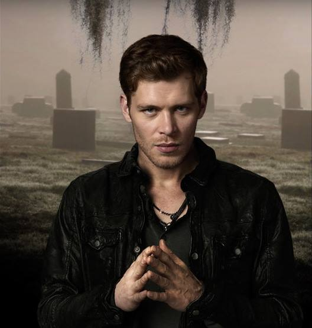
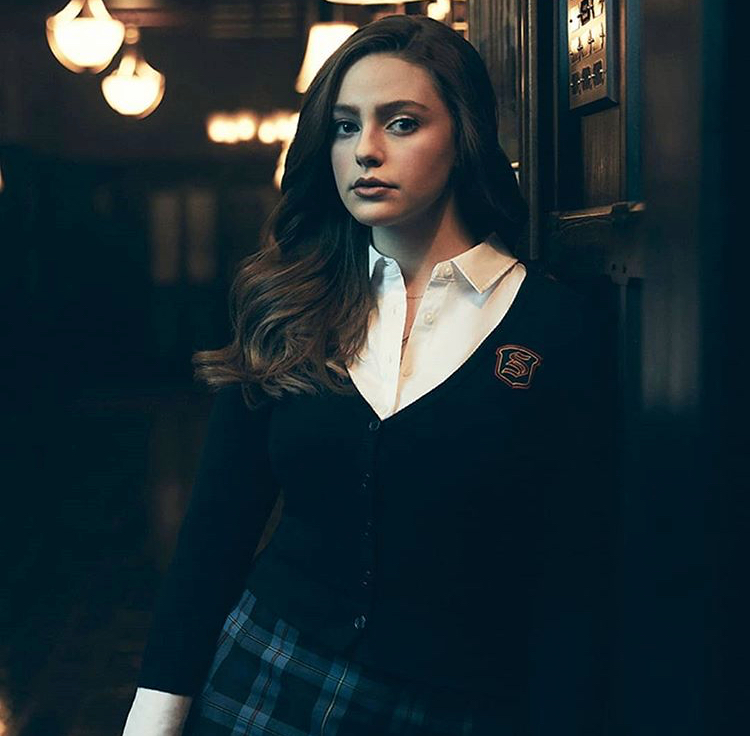

The Originals
Klaus, the original vampire/werewolf hybrid, returns to New Orleans - which his family helped build - to investigate rumours of a plot against him, in this spin-off of `The Vampire Diaries'. He finds his former protege, Marcel, reigning powerful over its inhabitants, causing growing tension in the supernatural community. Klaus' brother, Elijah, joins him, and they learn that werewolf Hayley has fallen into the hands of a defiant witch who has life-changing information. Klaus and Elijah plan to reclaim the city, and while waiting to see if their last remaining sibling, Rebekah, will leave Mystic Falls to join them, they form an alliance with the witches to help further their cause.

The Legacies
The town of Mystic Falls has a new generation of protectors in this spin-off of "The Vampire Diaries" and "The Originals." The Salvatore School for the Young and Gifted is home to Klaus Mikaelson's daughter Hope, Alaric Saltzman's twins Lizzie and Josie, and other young adults who are coming of age as witches, vampires and werewolves, nurtured to be their best selves and overcome their villainous impulses. Together, they rely on ancient folklore and tales to learn how to battle their far-reaching enemies and attempt to keep balance in the world.''
.jpg)